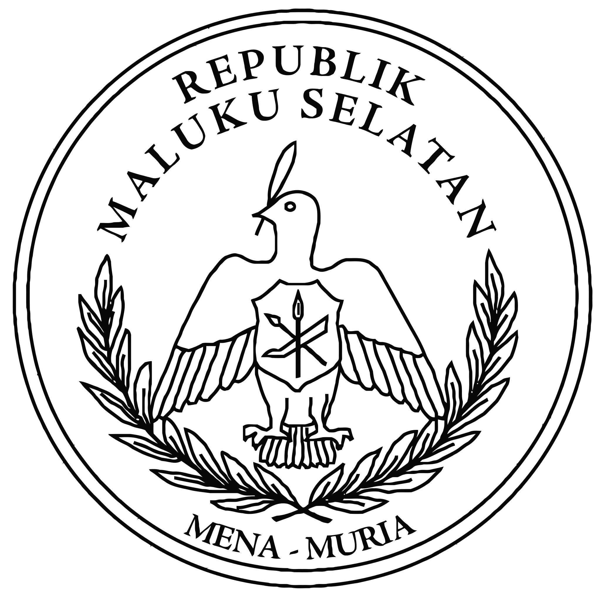

MalukuInfo
MalukuInfo
Maluku

Welkom op deze pagina over de Molukken! Hier kan je alles vinden over de de eilanden groep, dat zich in Indonesië bevindt. De Molukken zijn een eilandengroep in Zuidoost-Azië, behorende tot Indonesië.